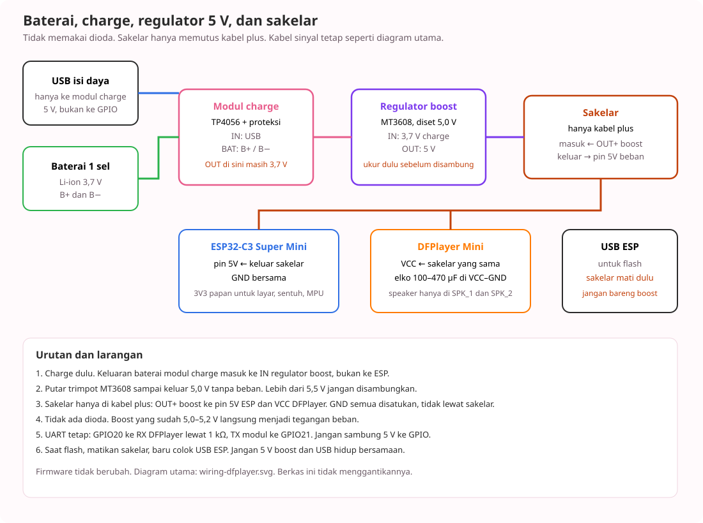

🔋 Baterai, regulator, dan dioda

Diagram USB utama tidak diubah: diagram kabel · wiring-dfplayer.svg. Gambar daya: wiring-baterai.svg. Rangkaian lengkap: wiring-lengkap.svg.


Sambungan
- Baterai Li-ion 1 sel ke B+ dan B− modul charge TP4056. Jangan dibalik.
- USB isi daya masuk ke modul charge, bukan ke GPIO.
- Keluaran baterai modul charge (sekitar 3,7 V) masuk ke IN regulator boost MT3608. Jangan langsung ke ESP atau DFPlayer.
- Ukur OUT boost tanpa beban. Set ke 5,0–5,2 V. Di atas 5,5 V jangan disambungkan.
- Dioda Schottky 1N5819 atau SS34: anoda di OUT+ boost, katoda ke pin 5V ESP dan VCC DFPlayer.
- GND baterai, charge, boost, ESP, dan DFPlayer disatukan. Elko 100–470 µF di VCC–GND DFPlayer, sesudah dioda.
- Layar, TTP223, dan MPU6050 tetap di 3V3 papan. 3V3 itu sudah regulator di ESP, tidak perlu AMS1117 lagi.
- Dengan dioda ini, USB ESP boleh tertancap untuk flash saat baterai menyala. Tanpa dioda, jangan.
Firmware tidak perlu diubah. DFPlayer tidak jalan dari 3,7 V.